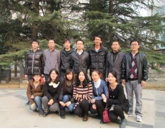

光与视觉研究室
一 研究室负责人介绍
黄志同： 男，工学博士，讲师。先后参与国家973、863和自然科学基金等多项课题，在光与无线融合、光网络动态资源调度等方面取得了多项研究成果。在《IEEE Communications Letters》、《Chinese Optics Letters》、《邮电高校学报（英文版）》等本领域重要学术刊物上发表SCI/EI检索论文20余篇，其中SCI检索6篇，申请国家发明专利8项，其中3项获得授权，参与获得2011年度中国通信学会科学技术一等奖，2012年度教育部科学技术进步二等奖。
主要研究方向： 可见光通信、数字图像处理
二 研究室成员
组长：曾凡祥
成员：李建锋、刘让龙、刘轩、张馨跃、李嫣、张红、韩琦、姜萌、张汝琦、付江丽
